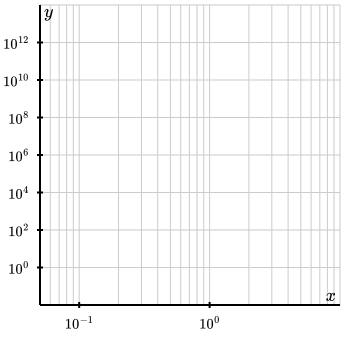

Note that this feature is not yet implemented in PreTeXt, but it will be soon.
Section 3.12 Working with data
It is possible to read in an external file and access its content from within a PreFigure source file. This can be used to create, for example, some common statistical diagrams, such as scatter plots and histograms.
Subsection 3.12.1 Reading an external file
The
<read> element is used for reading in an external file. The name of the file needs to be supplied with the @filename attribute, and the contents can later be referenced with the @name attribute. Here are some additional attributes- type
- This describes the type of file to be read. At present, the only possible file type is CSV though additional file types are expected to be added. The default is therefore
@type="csv". - delimiter
- For reading a CSV, the value of this attribute defines the file’s delimiter. By default, the delimiter is a single comma.
- quotechar
- The value of this attribute tells the CVS reader what character to view as quotation marks, whose enclosed content is read as a single entry. By default, the delimiter is a single quote.
- string-columns
- When reading a CSV file, the value of this parameter can be a list of headers in the file whose columns should be interpreted as strings rather than numbers.
In the simplest case, PreFigure looks for the file in the file structure relative to the current PreFigure source. This can be modified using an
<external-root> element in a PreFigure publication file. If this element has the attribute @name="/home/data", and the <read> element has @name="input.csv", then PreFigure will expect the file to be located at /home/data/input.csv.
Inside a PreTeXt document, the
<external-root> element should be included in the <prefigure-preamble> element inside <docinfo>.
PreFigure expects CSV files to have some structure. In particular, the first line of the file will be interpreted as headers for the columns. If first line is
0,1,2, then the headers will be referenced later as “0”, “1”, and “2”. It is then assumed that each subsequent row has at least as many entries as headers. If a header appears in the list defined by the @string-columns attribute, then the entries in that column are interpreted as strings. Otherwise, they are interpreted as numerical data.
A well-known dataset contains measurements of 150 irises along with the species they belong to. The first two lines of the file are
sepal length,sepal width,petal length,petal width,species 5.1,3.5,1.4,0.2,Iris-setosa
The element
<read name="data" filename="iris.csv"> will read this file with the results later referenced as data. For instance, data['sepal length'] contains the list of sepal lengths of 150 irises. data['species'] contains a list of the species each flower belongs to. You may notice that we did not need to specify that the last column consists of strings since this is automatically detected by PreFigure.There are two useful operations.
- filter
- The
filterfunction can be used to trim a column of the dataset by some criterion. For instance,filter(df['sepal length', 'species', 'Iris-setosa'])returns a list of the sepal lengths of the flowers whosespeciesattribute is “Iris-setosa”. - zip_lists
- If we have two lists with the same number of entries, this function returns a list of points whose entries come from the two lists. For instance,
zip_lists(df['sepal length'], df['sepal width'])will be a list of 150 points whose first entry is the sepal length and whose second is the sepal width of each flower.
Next we will see some things we can do with data like this.
Subsection 3.12.2 Scatter plots
We can create scatter plots in PreFigure. Of course, we don’t need to use data that is loaded from an external source, but that might be the most common use case. This is demonstrated in Figure 3.12.1.
<diagram xmlns="https://prefigure.org"
dimensions="(300,300)"
margins="(30,30,5,5)">
<read name="df" filename="iris.data"
string-columns="['species']"/>
<definition>x=filter(df, 'sepal length', 'species', 'Iris-versicolor')</definition>
<definition>y=filter(df, 'petal width', 'species', 'Iris-versicolor')</definition>
<definition>points=zip_lists(x, y)</definition>
<coordinates bbox="(4,0,9,3)">
<grid-axes>
<xlabel alignment="nw">Sepal length</xlabel>
<ylabel alignment="se">Petal width</ylabel>
</grid-axes>
<scatter points="points" fill="blue"/>
</coordinates>
</diagram>
Notice that we read the data using a
<read> element and then form a set of points using the filter and zip_lists functions. These points are given to the <scatter> element through the @name attribute. Each point will be plotted using a <point> element, which is internally created using attributes supplied by the <scatter> element. In this example, the <scatter> element simply defined the fill of those points to be “blue”.
As a convenience, the
<scatter> element offers a more direct way to build scatter plots directly from the data source. This is demonstrated in Figure 3.12.3.
<diagram xmlns="https://prefigure.org"
dimensions="(400,300)"
margins="(30,30,5,5)">
<read name="df" filename="iris.data"
string-columns="['species']"/>
<coordinates bbox="(4,0,9,3)">
<grid-axes>
<xlabel alignment="nw">Sepal length</xlabel>
<ylabel alignment="se">Petal width</ylabel>
</grid-axes>
<scatter at="setosa" data="df"
x="sepal length" y="petal width"
filter="('species','Iris-setosa')"
fill="blue"
annotate="yes" text="Data from 50 Iris setosas"
point-text="An iris setosa"/>
<scatter at="versicolor" data="df"
x="sepal length" y="petal width"
filter="('species','Iris-versicolor')"
fill="red" style="box" size="4"
annotate="yes" text="Data from 50 Iris versicolor"
point-text="An iris versicolor"/>
<scatter at="virginica" data="df"
x="sepal length" y="petal width"
filter="('species','Iris-virginica')"
fill="green" style="diamond" size="4"
annotate="yes" text="Data from 50 Iris virginica"
point-text="An iris virginica"/>
<legend anchor="(bbox[2],0.3)"
alignment="nw" opacity="0.9">
<item ref="setosa-point">Iris-setosa</item>
<item ref="versicolor-point">Iris-versicolor</item>
<item ref="virginica-point">Iris-virginica</item>
</legend>
</coordinates>
<annotations>
<annotation ref="figure"
text="Scatter plot of the iris data set">
<annotation ref="setosa"/>
<annotation ref="versicolor"/>
<annotation ref="virginica"/>
</annotation>
</annotations>
</diagram>
Notice that the
<scatter> element has an attribute @data that points to the dataset read in earlier. We then state the headers of the columns of the data set that we intend to plot using the @x and @y attributes. An optional @filter attribute can be supplied to filter the data, which is then zipped together internally.
This example also demonstrates a few more features, some of which we will explore in more detail later. For now, notice that the
<legend> needs the handle of a point. The handle of the second <scatter> element is “versicolor†so the handle of the points created by PreFigure are “versicolor-point”; that is “-point†is appended to the handle of the <scatter> element.
Each scatter plot is annotated by setting
@annotate="yes", specifying the text for the group using @text, and declaring the text for each point using @point-text. More details about annotating a group of objects like this is included in Section 6.1.
Subsection 3.12.3 Histograms
<diagram xmlns="https://prefigure.org"
dimensions="(400,300)"
margins="(30,30,5,5)">
<read name="df" filename="iris.data"
string-columns="['species']"/>
<coordinates bbox="(3,0,9,25)">
<grid-axes>
<ylabel alignment="se">Sepal length</ylabel>
</grid-axes>
<histogram at="histogram" data="df['sepal length']" outline="tactile"
min="4" max="9" bins="20"
fill="lightskyblue" stroke="black"
annotate="yes"
text="The histogram with 20 bins"
bin-text="A bin from ${__histogram_x[bin_num]}"/>
</coordinates>
<annotations>
<annotation ref="figure"
text="A histogram of irises with 30 bins grouped by sepal length">
<annotation ref="histogram"/>
</annotation>
</annotations>
</diagram>
Notice that the histogram is defined through a
@data attribute, which is one column of the dataset, along with the attributes @min, @max, and @bins, which is the number of bins.
Once again, some more advanced annotation features are demonstrated. There are two lists created internally,
__histogram_x and __histogram_y, that describe the upper-left corner of each bar. There is a parameter bin_num that iterates through each bin and that can be used for annotating. Another quantity delta_x is also defined as the width of the bins.
The handle of a bar created by the
<histogram> is “-bin†appended to the handle of the <histogram>.
Subsection 3.12.4 Plotting a trajectory
There may be times when one generates data in some way and then wants to plot it. Perhaps you have solved a differential equation using a specialized or novel technique and saved the results in a CSV file. Figure 3.12.7 illustrates a solution to the three-body problem found using an adaptive method.
<diagram dimensions="(300,300)" margins="5">
<read filename="gragg_data.csv" name="data" delimiter=' '/>
<definition>x = data['x']</definition>
<definition>y = data['y']</definition>
<definition>points=zip_lists(x,y)</definition>
<coordinates bbox="(-15,-8,15,8)">
<grid-axes xlabel="x" ylabel="y"/>
<polygon points="points" stroke="blue"/>
</coordinates>
</diagram>
Subsection 3.12.5 Log plots
Some diagrams are best expressed using a logarithmic scale on one or both axes. One may do this by adding the attribute
@scales to a <coordinates> element defining a bounding box. Possible values are @scales="linear", "semilogx", "semilogy", "loglog". This is demonstrated in Figure 3.12.9.
@scales="loglog" on the <coordinates> element<diagram dimensions="(300,300)" margins="(40,40,5,5)">
<definition>a=10</definition>
<definition>f(x) = x^2</definition>
<coordinates bbox="(10^-2,10^-2,10^3, 10^5)" scales="loglog">
<grid-axes xlabel="x" ylabel="y"/>
<graph function="f"/>
<point p="(a,f(a))" alignment="se">
<m>P</m>
</point>
</coordinates>
</diagram>
As seen in Listing 3.12.10, PreFigure generates default grid spacings and label positions. This behavior can be modified using the attributes described in Subsection 3.3.2, with one difference. With a linear scale, the spacing of grid lines is described with a triple
(start, space, end). If using a logarithmic scale, the middle quantity should be the number of grid lines per decade, as shown in Figure 3.12.11. Possible values are 1/n, 1, 2, 5, 10.

<diagram dimensions="(300,300)" margins="(40,40,5,5)">
<coordinates bbox="(10^-1,10^-2,10^1, 10^14)" scales="loglog">
<grid-axes xlabel="x" ylabel="y"
spacings="((10^-1,10,10^1),(10^-2,1/2,10^14))"
vlabels="(10^0,1/2,10^12)"/>
</coordinates>
</diagram>